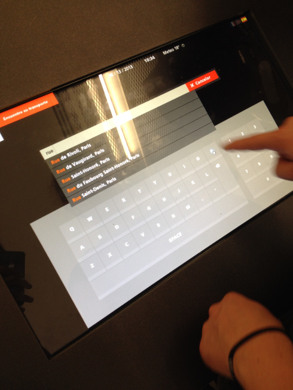
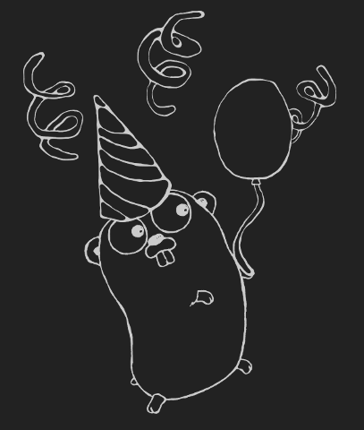

Borne d'informations
pour les voyageurs
Aéroports de Paris
package main
import "net/http"
func HelloWorld(w http.ResponseWriter, req *http.Request) {
w.Write([]byte("Hello world!"))
}
func main() {
http.HandleFunc("/", HelloWorld)
http.ListenAndServe("127.0.0.1:8000", nil)
}Installation :
$ go get github.com/bmizerany/patfunc HelloWorld(w http.ResponseWriter, req *http.Request) {
var response Response
response.Hello = req.URL.Query().Get(":name")
b, err := json.Marshal(response)
if err != nil {
http.Error(w, err.Error(), 500)
return
}
w.Write(b)
}
func main() {
m := pat.New()
m.Get("/hello/:name", http.HandlerFunc(HelloWorld))
http.Handle("/", m)
http.ListenAndServe("127.0.0.1:8000", nil)
}var jsonBlob = []byte(`[
{"Name": "Platypus", "Order": "Monotremata"},
{"Name": "Quoll", "Order": "Dasyuromorphia"}
]`)
type Animal struct {
Name string
Order string
}
var animals []Animal
err := json.Unmarshal(jsonBlob, &animals)
if err != nil {
fmt.Println("error:", err)
}
fmt.Printf("%+v", animals)encoding/json est fourni par la bibliothèque standardresponse, _ := http.Get(uri)
defer response.Body.Close()
body, _ := ioutil.ReadAll(response.Body)
resp := make(map[string]interface{})
json.Unmarshal(body, &resp)
jq := jsonq.NewQuery(resp)status, err := jq.String("status")
if err != nil {
return
}
if status != "OK" {
err = errors.New(status)
return
}
lat, _ = jq.Float("result",
"geometry",
"location",
"lat")
lng, _ = jq.Float("result",
"geometry",
"location",
"lng")data := []byte(`
<Person>
<FullName>Grace R. Emlin</FullName>
<Company>Example Inc.</Company>
<Email where="home">
<Addr>gre@example.com</Addr>
</Email>
<Group>
<Value>Friends</Value>
<Value>Squash</Value>
</Group>
</Person>
`)type Email struct {
Where string `xml:"where,attr"`
Addr string
}
type Result struct {
Name string `xml:"FullName"`
Email []Email
Groups []string `xml:"Group>Value"`
}
result := Result{}
err := xml.Unmarshal(data, &result)
if err != nil {
fmt.Printf("error: %v", err)
return
}
fmt.Printf("%+v", result)response, err := http.Get(uri)
if err != nil {
return
}
defer response.Body.Close()
data, _ := ioutil.ReadAll(response.Body)
doc, err := gokogiri.ParseXml(data)
if err != nil {
return
}
defer doc.Free()costs, err := doc.Root().Search("Fare/Cost")
if err != nil {
return
}
fare := 0.0
for _, cost := range costs {
c, _ := strconv.ParseFloat(cost.Content(), 64)
fare += c
}$ go get github.com/jmoiron/jsonqvs
$ go get -u github.com/jmoiron/jsonqExemple : Go Manager (gom)
github.com/mattn/gom
$ gom gen gomfile
$ gom run main.go
$ gom installExemple de Gomfile :
gom 'github.com/bmizerany/pat', :commit => '51b7af73e39f6dc59846b22d56ca886d105ef0c3'
gom 'github.com/jmoiron/jsonq', :commit => '1492323a9352de17cf4e78a37a293158b38d2206'
gom 'github.com/moovweb/gokogiri', :commit => 'c5dd3eda2ecc900cfe098ea19b4a021bc9cafb5c'
Revel
A high-productivity web framework for the Go language